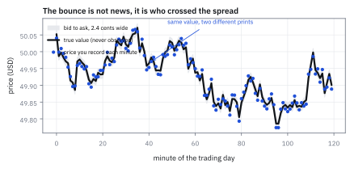
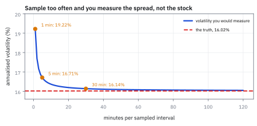
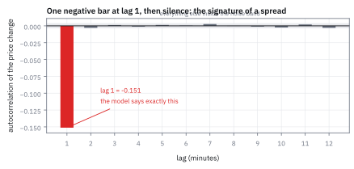
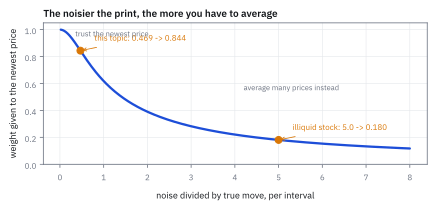

25.3 The Roll Model — Prices Are Observed With Error
ราคาบนจอไม่ใช่ราคาจริง และความคลาดเคลื่อนนั้นวัดได้
หุ้นตัวหนึ่งราคา \$50 คุณวัดความผันผวนจากราคาทุก 1 นาที ได้ 19.2% ต่อปี แต่วัดจากราคาทุก 30 นาที ได้ 16.1% อันไหนถูก และอะไรกินส่วนต่าง 3 จุดนั้นไป?
เฉลย: อันที่ 30 นาทีเกือบถูก ความจริงคือ 16.0% ส่วนต่างทั้งหมดมาจากการที่ราคาที่เห็นเด้งไปมาระหว่าง bid กับ ask ซึ่งไม่ใช่การเคลื่อนไหวของมูลค่าจริง ที่สวยคือความคลาดเคลื่อนนี้ทิ้งลายนิ้วมือไว้ให้จับได้ lag-1 autocovariance ของส่วนต่างราคาเท่ากับลบขนาดความคลาดเคลื่อนกำลังสองพอดี จาก −0.000144 จึงอ่านย้อนได้ว่า spread กว้าง 2.4 เซนต์
ศัพท์ที่ใช้ในหัวข้อนี้
- Roll model
- แบบจำลองที่แยกราคาจริงซึ่งมองไม่เห็น ออกจากราคาที่สังเกตได้ซึ่งมีความคลาดเคลื่อน ใช้ประมาณ spread จากข้อมูลราคาอย่างเดียว
- efficient price
- ราคาจริงที่สะท้อนข้อมูลทั้งหมด มองไม่เห็นโดยตรง ใช้เป็นตัวที่เราอยากประมาณ
- bid price
- ราคาสูงสุดที่มีคนพร้อมซื้อ ใช้เป็นราคาที่คนขายด่วนจะได้รับ
- ask price
- ราคาต่ำสุดที่มีคนพร้อมขาย ใช้เป็นราคาที่คนซื้อด่วนต้องจ่าย
- bid-ask spread
- ส่วนต่างระหว่าง ask กับ bid ใช้วัดต้นทุนของการซื้อขายทันที
- bid-ask bounce
- การที่ราคาซื้อขายกระโดดสลับระหว่าง bid กับ ask ตามว่าฝ่ายไหนเป็นคนเริ่ม ใช้อธิบายความคลาดเคลื่อนที่ไม่ใช่ข่าว
- mid price
- ค่ากลางระหว่าง bid กับ ask ใช้เป็นตัวแทนของราคาจริงที่ดีกว่าราคาซื้อขายล่าสุด
- measurement error
- ส่วนต่างระหว่างสิ่งที่วัดได้กับสิ่งที่เป็นจริง ใช้แยกออกจากการเคลื่อนไหวของมูลค่า
- autocorrelation function (ACF)
- ค่าที่บอกว่าค่าวันนี้กับค่าเมื่อ k ช่วงก่อนเดินไปทางเดียวกันแค่ไหน ใช้จับลายนิ้วมือของความคลาดเคลื่อนในหัวข้อนี้
- autocovariance
- ค่าเฉลี่ยของผลคูณระหว่างค่าวันนี้กับค่าเมื่อ k วันก่อน ยังไม่ได้ปรับสเกล ใช้เป็น autocorrelation function (ACF) ในหน่วยดิบ
- volatility signature plot
- กราฟความผันผวนที่วัดได้ เทียบกับความถี่ที่ใช้เก็บราคา ใช้เลือกความถี่ที่ความคลาดเคลื่อนยังไม่ครอบงำ
- state-space model
- แบบจำลองที่มีตัวแปรสถานะซึ่งมองไม่เห็น กับตัวแปรที่สังเกตได้ซึ่งเป็นสถานะบวกความคลาดเคลื่อน ใช้เป็นกรอบของทั้งหัวข้อนี้และ 25.5
- exponentially weighted moving average (EWMA)
- ค่าเฉลี่ยที่ให้น้ำหนักอดีตลดลงแบบ exponential ใช้เป็นรูปที่สูตรของ Kalman ในหัวข้อนี้กลายร่างไปเป็น
- Kalman filter
- สูตรที่ให้ค่าประมาณสถานะที่ดีที่สุดในความหมายกำลังสอง โดยผสมค่าประมาณเก่ากับข้อมูลใหม่ ใช้หาว่าควรเชื่อราคาล่าสุดแค่ไหน
- Kalman gain
- น้ำหนัก K ที่ให้กับข้อมูลใหม่ ใช้ตัดสินว่าจะเฉลี่ยราคาย้อนหลังมากหรือน้อย
- tick size
- หน่วยราคาที่เล็กที่สุดที่ส่งคำสั่งได้ ในตลาดหุ้นสหรัฐฯ คือ \$0.01 สำหรับหุ้นเกิน \$1 ใช้เป็นพื้นของ spread
- microstructure noise
- ความคลาดเคลื่อนของราคาที่เกิดจากกลไกการจับคู่คำสั่ง ไม่ใช่จากข่าว ใช้เรียกรวมทุกสาเหตุในหัวข้อนี้
สัญลักษณ์ที่ใช้ในหัวข้อนี้
| สัญลักษณ์ | ความหมาย | หน่วย |
|---|---|---|
| $m_t$ | ราคาจริงที่มองไม่เห็น ณ เวลา t | USD ต่อหุ้น |
| $p_t$ | ราคาที่สังเกตได้ ณ เวลา t | USD ต่อหุ้น |
| $\Delta p_t$ | ส่วนต่างราคาที่สังเกตได้ คือ $p_t-p_{t-1}$ | USD ต่อหุ้น |
| $\sigma_\epsilon$ | ขนาดการเคลื่อนไหวจริงต่อหนึ่งช่วงเวลา | USD ต่อหุ้น |
| $\sigma_\eta$ | ขนาดความคลาดเคลื่อนของการวัดราคา | USD ต่อหุ้น |
| $\epsilon_t,\ \eta_t$ | ก้อนสุ่มมาตรฐาน อิสระจากกันและจากอดีต | unitless |
| $s$ | ความกว้างของ bid-ask spread | USD ต่อหุ้น |
| $\kappa$ | อัตราส่วนความคลาดเคลื่อนต่อการเคลื่อนไหวจริง คือ $\sigma_\eta/\sigma_\epsilon$ | unitless |
| $K$ | Kalman gain น้ำหนักที่ให้ราคาล่าสุด | unitless |
| $M$ | จำนวนนาทีซื้อขายในหนึ่งวัน ตลาดหุ้นสหรัฐฯ คือ 390 | นาที |
| $q$ | จำนวนนาทีต่อหนึ่งช่วงที่เก็บราคา | นาที |
ที่มาที่ไป: ราคาที่เห็นกับราคาที่เป็น
ในหัวข้อ 25.2 เราวัดทุกอย่างจากผลตอบแทน โดยสมมติเงียบ ๆ ว่าราคาที่มีคือราคาที่ถูก แต่ในตลาดจริง ราคาที่บันทึกได้คือราคาของการซื้อขายที่เกิดขึ้นจริง และการซื้อขายจะเกิดก็ต่อเมื่อมีฝ่ายหนึ่งยอมข้าม spread ไปหาอีกฝ่าย
ถ้าคนซื้อเป็นฝ่ายเริ่ม ราคาที่บันทึกคือ ask ถ้าคนขายเป็นฝ่ายเริ่ม ราคาที่บันทึกคือ bid ทั้งที่มูลค่าของบริษัทไม่ได้เปลี่ยนเลยระหว่างสองเหตุการณ์นั้น ราคาที่เห็นจึงเด้งไปมาโดยไม่มีข่าวอะไรเลย
Richard Roll ชี้ในปี 1984 ว่าการเด้งแบบนี้ไม่ได้แค่เพิ่มเสียงรบกวน มันทิ้งลายนิ้วมือที่จำเพาะมาก ถ้าครั้งนี้ราคาเด้งขึ้นไปแตะ ask ครั้งหน้ามีโอกาสครึ่งหนึ่งที่จะเด้งกลับลงมาที่ bid ส่วนต่างราคาสองครั้งติดกันจึงมีแนวโน้มสวนทางกัน และปริมาณที่สวนทางกันบอกขนาดของ spread ได้เป๊ะ ๆ
โจทย์: หุ้น \$50 กับราคาทุกนาที
โจทย์ให้อะไรมาบ้าง หุ้นราคา \$50 มีข้อมูลราคาทุก 1 นาที ตลาดหุ้นสหรัฐฯ เปิด 390 นาทีต่อวัน และ 251 วันต่อปี มูลค่าจริงเคลื่อนไหวด้วยขนาด $\sigma_\epsilon$ = \$0.0256 ต่อนาที และการวัดราคามีความคลาดเคลื่อนขนาด $\sigma_\eta$ = \$0.0120
ต้องหาห้าอย่าง lag-1 autocovariance ที่แบบจำลองทำนาย ความกว้างของ spread ที่อ่านย้อนได้จากตัวเลขนั้น ความผันผวนต่อปีที่จะวัดได้จากราคาทุก 1 นาที เทียบกับทุก 30 นาที เทียบกับความจริง และน้ำหนักที่ควรให้ราคาล่าสุดเวลาประมาณราคาจริง
ขั้นที่ 1 — แบบจำลองสองบรรทัด
นี่คือนิยามของแบบจำลอง ไม่ใช่ผลที่พิสูจน์ บรรทัดแรกบอกว่ามูลค่าจริงเดินแบบไม่มีความจำ บรรทัดที่สองบอกว่าเราเห็นมูลค่าจริงบวกความคลาดเคลื่อนที่สุ่มใหม่ทุกครั้ง ทั้ง $\epsilon$ และ $\eta$ เป็นก้อนสุ่มมาตรฐานที่อิสระจากกันและจากอดีตของตัวเอง
จุดที่ต้องสังเกตคือ $\eta_{t+1}$ สุ่มใหม่ทุกครั้ง ไม่ได้สะสม ความคลาดเคลื่อนของเมื่อกี้ไม่ตกทอดมาถึงตอนนี้ ต่างจาก $\epsilon$ ที่บวกเข้าไปใน $m$ แล้วอยู่ตลอดไป
ความต่างข้อนี้เองที่สร้างลายนิ้วมือในขั้นถัดไป ของที่ไม่สะสมจะโผล่เข้าและออกจากส่วนต่างราคาสองครั้งติดกัน ด้วยเครื่องหมายตรงข้าม
ขั้นที่ 2 — ลายนิ้วมือ: lag-1 ติดลบ ที่เหลือเป็นศูนย์
หาส่วนต่างราคาจากสองบรรทัดข้างบน แล้วคูณกับส่วนต่างของรอบก่อนและหาค่าเฉลี่ย ทุกพจน์ที่มีก้อนสุ่มคนละตัวหรือคนละเวลาจะเป็นศูนย์ เหลือรอดพจน์เดียว
พจน์เดียวที่รอดคือ $-\sigma_\eta\eta_t$ จากวงเล็บแรก คูณกับ $+\sigma_\eta\eta_t$ จากวงเล็บที่สอง เพราะเป็นก้อนสุ่มตัวเดียวกัน ณ เวลาเดียวกัน เครื่องหมายลบติดมาจากการที่ $\eta_t$ เข้าวงเล็บแรกในฐานะราคาเริ่มต้น และเข้าวงเล็บที่สองในฐานะราคาสิ้นสุด
บรรทัดสุดท้ายคือส่วนที่ทำให้แบบจำลองนี้ทดสอบได้จริง ที่ lag 2 ขึ้นไปต้องเป็นศูนย์สนิท ถ้าวัดข้อมูลจริงแล้วเจอค่าไม่เป็นศูนย์ที่ lag 3 หรือ 5 นั่นไม่ใช่ความคลาดเคลื่อนของการวัดแล้ว แต่เป็นสัญญาณว่าราคาจริงมีความจำ ซึ่งแบบจำลองนี้ไม่ได้ครอบคลุม
Figure 25.3a — ราคาจริงเดินเรียบ ๆ ส่วนราคาที่เห็นเด้งรอบมัน

เส้นหนาคือมูลค่าจริงที่มองไม่เห็น จุดคือราคาที่บันทึกได้ในแต่ละนาที แถบจาง ๆ คือกรอบ bid กับ ask กว้าง 2.4 เซนต์ จุดส่วนใหญ่แตะขอบบนหรือขอบล่าง ไม่ใช่เพราะมูลค่าเปลี่ยน แต่เพราะฝ่ายไหนเป็นคนเริ่มการซื้อขายครั้งนั้น
ขั้นที่ 3 — อ่าน spread ย้อนกลับจากตัวเลขเดียว
ถ้าราคาที่บันทึกคือ bid หรือ ask สลับกันไปอย่างละครึ่ง ความคลาดเคลื่อนคือครึ่งหนึ่งของ spread พอดี กลับสมการของขั้นที่ 2 แล้วได้สูตรของ Roll ซึ่งใช้ข้อมูลราคาอย่างเดียว ไม่ต้องมีข้อมูล quote เลย
คำตอบคือ spread กว้าง 2.4 เซนต์ หรือ 2.4 tick ซึ่งอ่านออกมาได้จากลำดับราคาล้วน ๆ นี่คือเหตุผลที่สูตรนี้ยังใช้กันอยู่สี่สิบปีให้หลัง ในตลาดที่ไม่มีข้อมูล quote ย้อนหลัง เช่นตลาด over-the-counter หลายแห่ง นี่อาจเป็นวิธีเดียวที่ทำได้
ตรวจเองใน 10 วินาที spread 2.4 เซนต์บนหุ้น \$50 คือ 4.8 จุดพื้นฐาน ซึ่งเป็นค่าที่สมเหตุสมผลสำหรับหุ้นขนาดกลางในตลาดสหรัฐฯ ถ้าคำนวณแล้วได้ 50 เซนต์บนหุ้น \$50 ให้กลับไปดูหน่วยก่อน
แล้วเอาไปใช้ทำอะไรได้จริงบ้าง
เรื่องนี้ไม่ใช่รายละเอียดปลีกย่อย มันตัดสินสองเรื่องบนโต๊ะจริง เรื่องแรกคือความถี่ที่ควรเก็บราคาเพื่อประมาณความผันผวน ซึ่งเป็นหัวใจของหัวข้อ 25.4 ทั้งหัวข้อ เรื่องที่สองคือราคาปิดที่ควรใช้ในแบบจำลอง ถ้าใช้ราคาซื้อขายครั้งสุดท้ายของช่วง คุณได้ความคลาดเคลื่อนเต็ม ๆ ถ้าใช้ค่าเฉลี่ยถ่วงน้ำหนักของราคาหลายนาทีก่อนหน้า คุณได้ค่าที่นิ่งกว่ามาก
มีผลตามมาที่สำคัญกับงานในบทที่ 27 ด้วย ถ้าหุ้นตัวหนึ่งซื้อขายไม่ถึงนาทีละครั้ง การใช้ช่วง 1 นาทีเป็นการวัดเสียงรบกวนเป็นหลัก นี่คือเหตุผลที่การเลือกความถี่ของแบบจำลองกับการเลือกจักรวาลหุ้นเป็นเรื่องเดียวกัน ยิ่งช่วงเวลาสั้น จักรวาลยิ่งต้องเล็กและสภาพคล่องสูง
ขั้นที่ 4 — ทำไมราคาทุกนาทีถึงบอกว่าความผันผวน 19.2%
รวมช่วงเวลา q นาทีเข้าด้วยกัน การเคลื่อนไหวจริงสะสมตามจำนวนช่วง แต่ความคลาดเคลื่อนโผล่แค่สองครั้งเสมอ ที่หัวกับที่ท้าย จึงไม่โตตาม q นั่นทำให้สัดส่วนของเสียงรบกวนเจือจางลงเมื่อ q โตขึ้น
ที่ q = 1 พจน์เสียงรบกวน 0.000288 ใหญ่เกือบครึ่งของพจน์จริง 0.000655 ความผันผวนที่วัดได้จึงพองขึ้น 20% พอดี พอ q = 30 พจน์จริงโตเป็น 30 เท่าขณะที่พจน์เสียงรบกวนเท่าเดิม สัดส่วนจึงเหลือ 1.4% และตัวเลขที่วัดได้เกือบตรงความจริง
บทเรียนคือความผันผวนที่ “วัดได้” ไม่ใช่สมบัติของหุ้น แต่เป็นสมบัติของหุ้นบวกวิธีที่เราวัด ใครก็ตามที่บอกความผันผวนของหุ้นโดยไม่บอกความถี่ที่ใช้เก็บราคา กำลังบอกไม่ครบ
Figure 25.3b — volatility signature plot: ยิ่งเก็บถี่ ยิ่งวัดได้สูงเกินจริง

แกนนอนคือจำนวนนาทีต่อหนึ่งช่วงที่เก็บราคา แกนตั้งคือความผันผวนต่อปีที่วัดได้ เส้นประคือความจริงที่ 16.02% ที่ 1 นาทีวัดได้ 19.22% ที่ 5 นาทีเหลือ 16.71% และที่ 30 นาทีเหลือ 16.14% ช่องว่างหดลงเหมือนหนึ่งส่วน q ไม่ใช่หายไปทันที
Figure 25.3c — ลายนิ้วมือใน ACF: ติดลบที่ lag 1 แล้วเงียบสนิท

ACF ของส่วนต่างราคาจากข้อมูลจำลอง 400,000 นาที แท่งที่ lag 1 ติดลบชัดเจนที่ −0.153 ตรงกับค่าที่แบบจำลองทำนาย ส่วน lag 2 ขึ้นไปจมอยู่ในแถบความคลาดเคลื่อน ถ้าข้อมูลจริงมีแท่งโผล่ที่ lag 3 หรือ 5 แปลว่าแบบจำลองสองสมการยังไม่พอ
ขั้นที่ 5 — ควรเชื่อราคาล่าสุดแค่ไหน
ถ้ารู้ทั้ง $\sigma_\epsilon$ และ $\sigma_\eta$ แล้ว มีน้ำหนักที่ดีที่สุดในความหมายกำลังสอง ซึ่งได้จากสมการ Riccati ของ Kalman filter หัวข้อ 25.5 จะอนุมานสมการนี้เต็ม ๆ ที่นี่ใช้ผลลัพธ์กับตัวเลขของโจทย์ก่อน
คำตอบคือให้น้ำหนักราคาล่าสุด 84% และค่าประมาณเก่า 16% เหตุผลอ่านได้จาก $\kappa$ ความคลาดเคลื่อนเล็กกว่าการเคลื่อนไหวจริงเกือบครึ่ง ราคาล่าสุดจึงเชื่อถือได้พอสมควร ไม่ต้องเฉลี่ยย้อนหลังมาก
ถ้าความคลาดเคลื่อนใหญ่ขึ้น เช่นในหุ้นสภาพคล่องต่ำที่ $\kappa$ = 5 น้ำหนักจะตกลงเหลือราว 0.18 แปลว่าต้องเฉลี่ยราคาย้อนหลังหลายนาที เพราะราคาครั้งเดียวบอกอะไรไม่ได้มาก นี่คือ EWMA ที่จะกลับมาเต็มตัวในหัวข้อ 25.5
Figure 25.3d — น้ำหนักที่ให้ราคาล่าสุด ลดลงเมื่อเสียงรบกวนดังขึ้น

แกนนอนคืออัตราส่วนความคลาดเคลื่อนต่อการเคลื่อนไหวจริง แกนตั้งคือน้ำหนักที่ให้ราคาล่าสุด ที่โจทย์นี้อยู่ที่ 0.469 และได้น้ำหนัก 0.844 พอเสียงรบกวนดังกว่าการเคลื่อนไหวจริงห้าเท่า น้ำหนักตกเหลือ 0.18 และต้องเฉลี่ยย้อนหลังแทน
กับดัก: ช่วงที่ทับกัน และการอ่าน lag-1 ติดลบว่าเป็นสัญญาณ
กับดักแรกและอันตรายที่สุดคือใช้ราคาที่ผ่านการเฉลี่ยแล้วไปคิดผลตอบแทนของช่วงสั้นที่ทับกัน ถ้า $\hat m$ ที่ต้นงวดกับปลายงวดต่างใช้ข้อมูลราคาชุดเดียวกันบางส่วน ทั้งสองค่าจะมีความสัมพันธ์กันเอง และผลตอบแทนที่ได้จะมี autocorrelation เทียมที่เป็นบวก ซึ่งจะดูเหมือน momentum ที่ทำเงินได้ในการทดสอบย้อนหลัง กฎง่าย ๆ คือต้องให้ $(1-K)^{T}$ เล็กมากเมื่อ T คือจำนวนช่วงระหว่างสองเวลานั้น ที่ K = 0.844 ค่านี้เป็น 0.156 ที่ T = 1 แต่เป็น 9.4 × 10⁻⁵ ที่ T = 5
กับดักที่สองคืออ่าน lag-1 ที่ติดลบว่าเป็นโอกาสทำกำไรแบบ mean reversion มันเป็นกำไรบนกระดาษเท่านั้น เพราะการจะเก็บกำไรนั้นได้ต้องซื้อที่ bid และขายที่ ask ซึ่งแปลว่าต้องเป็นฝ่ายตั้งคำสั่งรอและถูกเลือกโดยคนที่รู้มากกว่า ค่าที่วัดได้คือขนาดของ spread ไม่ใช่ขนาดของกำไร
กับดักที่สามคือใช้แบบจำลองนี้กับหุ้นที่ซื้อขายน้อย ถ้าหุ้นซื้อขายเฉลี่ยทุก 5 นาที การใช้ช่วง 1 นาทีทำให้มีช่วงที่ราคาไม่เปลี่ยนเลยเพราะไม่มีการซื้อขาย ไม่ใช่เพราะมูลค่านิ่ง นั่นสร้าง autocorrelation เป็นบวกซึ่งเป็นคนละอาการกับที่แบบจำลองนี้อธิบาย
ข้อจำกัด: วิธีนี้สมมติอะไร และของจริงเป็นอย่างไร
| เรื่อง | วิธีนี้สมมติว่า | ของจริงเป็นอย่างไร | ผลที่ตามมาเวลาใช้งาน |
|---|---|---|---|
| ทิศของคนเริ่มซื้อขาย | ซื้อกับขายอย่างละครึ่ง อิสระจากอดีต | คำสั่งใหญ่ถูกซอยเป็นคำสั่งย่อยทิศเดียวกันติดกัน | สูตรของ Roll ให้ spread ต่ำกว่าจริง ต้องขยายแบบจำลองไปหลาย lag |
| ขนาดความคลาดเคลื่อน | คงที่ตลอดวัน | spread กว้างตอนเปิดและแคบตอนบ่าย | ควรประมาณแยกตามช่วงเวลาของวัน |
| ความผันผวนจริง | คงที่ | เปลี่ยนตลอดตามข่าว | ค่าที่ได้เป็นค่าเฉลี่ยของช่วง ไม่ใช่ค่าของวินาทีนั้น |
| ผลต่อราคาถาวร | ไม่มี การซื้อขายไม่เปลี่ยนมูลค่า | คำสั่งใหญ่มีข้อมูล และดันราคาอย่างถาวรบางส่วน | ส่วนที่ถาวรจะถูกนับเป็นการเคลื่อนไหวจริง ซึ่งถูกต้องแล้ว แต่ต้องรู้ว่าปนอยู่ |
แถวแรกเป็นเหตุผลที่งานจริงมักใช้สูตรที่นับ autocovariance หลาย lag ไม่ใช่แค่ lag เดียว ซึ่งเป็นการขยายแบบจำลองสองสมการนี้ตรง ๆ
ตรวจทุกตัวเลขของแบบจำลอง Roll
import numpy as np
se, sn, P0, M, D = 0.0256, 0.0120, 50.0, 390, 251
# step 2: the model's prediction, then the same thing measured in simulation
assert abs(-sn ** 2 - (-0.000144)) < 1e-15
rng = np.random.default_rng(3)
n = 400_000
m = P0 + np.cumsum(se * rng.standard_normal(n))
p = m + sn * rng.standard_normal(n)
dp = np.diff(p)
assert abs(np.mean(dp[1:] * dp[:-1]) - (-sn ** 2)) < 3e-6 # lag 1 matches
for k in (2, 3, 5, 10):
assert abs(np.mean(dp[k:] * dp[:-k])) < 3e-6 # every other lag is zero
assert abs(np.mean(dp[1:] * dp[:-1]) / dp.var() - (-0.153)) < 2e-3 # the ACF bar in the figure
# step 3: Roll's spread estimator, from prices alone
spread = 2 * np.sqrt(-np.mean(dp[1:] * dp[:-1]))
assert abs(spread - 0.0240) < 2e-4
assert abs(0.0240 / P0 * 1e4 - 4.8) < 1e-9 # 4.8 basis points
# step 4: the volatility signature
def measured(q):
var = q * se ** 2 + 2 * sn ** 2
return np.sqrt(var) / P0 * np.sqrt(M / q * D)
assert abs(measured(1) - 0.19218) < 1e-5
assert abs(measured(5) - 0.16712) < 1e-5
assert abs(measured(30) - 0.16136) < 1e-5
truth = se / P0 * np.sqrt(M * D)
assert abs(truth - 0.16019) < 1e-5
assert abs(np.sqrt(se ** 2 + 2 * sn ** 2) / se - 1.1998) < 1e-4 # 20% too high at 1 minute
assert all(measured(q) > measured(q * 2) for q in (1, 2, 5, 15)) # it only ever falls
# step 5: how much to trust the newest price
kappa = sn / se
assert abs(kappa - 0.46875) < 1e-12
s2 = 0.5 * se ** 2 * (1 + np.sqrt((2 * kappa) ** 2 + 1))
K = s2 / (s2 + sn ** 2)
assert abs(s2 - 0.00077684) < 1e-8 and abs(K - 0.84362) < 1e-5
assert abs(s2 ** 2 / (s2 + sn ** 2) - se ** 2) < 1e-12 # it solves the Riccati equation
assert abs((1 - K) ** 5 - 9.35e-05) < 1e-7 # overlap dies by 5 periods
k5 = 5.0 # an illiquid stock
s2b = 0.5 * se ** 2 * (1 + np.sqrt((2 * k5) ** 2 + 1))
assert abs(s2b / (s2b + (k5 * se) ** 2) - 0.1803) < 1e-3บล็อกแรกไม่ได้เชื่อสูตร แต่จำลองราคา 400,000 นาทีแล้ววัด autocovariance จริง ได้ค่าตรงกับที่แบบจำลองทำนายทุก lag ส่วนบรรทัด Riccati ยืนยันว่าค่าที่ใช้เป็นคำตอบของสมการ ไม่ใช่ตัวเลขที่หยิบมาลอย ๆ
ก่อนไปต่อ
ตอนนี้เรารู้แล้วว่าราคาถี่เกินไปให้ความผันผวนที่สูงเกินจริง คำถามถัดไปคือ ถ้ามีข้อมูลรายนาทีอยู่ในมือ ควรใช้มันอย่างไรให้ได้ประมาณการความผันผวนรายวันที่ดีที่สุด และความถี่ไหนคือจุดที่พอดี หัวข้อถัดไปตอบด้วยตัวเลข
สรุปที่ใช้ได้จริง
- ราคาที่เห็นคือมูลค่าจริงบวกความคลาดเคลื่อนที่สุ่มใหม่ทุกครั้ง ความคลาดเคลื่อนนั้นไม่สะสม ต่างจากการเคลื่อนไหวของมูลค่าซึ่งสะสม
- lag-1 autocovariance ของส่วนต่างราคาเท่ากับ $-\sigma_\eta^2$ พอดี และทุก lag ที่สูงกว่าเป็นศูนย์ นี่คือลายนิ้วมือที่ทดสอบได้ ถ้ามีแท่งโผล่ที่ lag 3 แปลว่าแบบจำลองยังไม่พอ
- กลับสมการนั้นได้สูตรของ Roll คือ $s=2\sqrt{-\text{cov}}$ จาก −0.000144 ได้ spread 2.4 เซนต์ หรือ 4.8 จุดพื้นฐานบนหุ้น \$50 โดยไม่ต้องมีข้อมูล quote เลย
- variance ของช่วง q นาทีเท่ากับ $q\sigma_\epsilon^2+2\sigma_\eta^2$ พจน์เสียงรบกวนไม่โตตาม q ราคาทุก 1 นาทีจึงให้ 19.22% ต่อปี ทุก 30 นาทีให้ 16.14% ขณะที่ความจริงคือ 16.02%
- น้ำหนักที่ควรให้ราคาล่าสุดคือ 0.844 เมื่อความคลาดเคลื่อนเล็กกว่าการเคลื่อนไหวจริง และตกเหลือ 0.18 เมื่อเสียงรบกวนดังกว่าห้าเท่า ต้องระวังไม่ให้ช่วงที่ใช้เฉลี่ยทับกัน ไม่อย่างนั้นจะได้ momentum เทียม